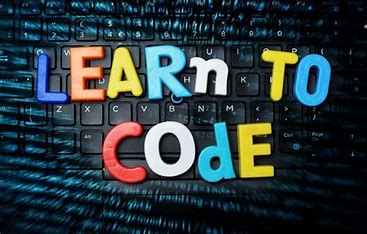
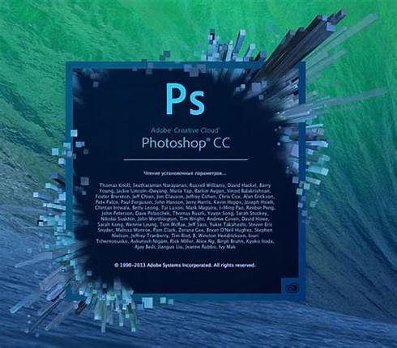

Top Skills To Learn Online
Learning new skills is a great way to position yourself as a strong candidate for job openings. Fortunately, learning skills online makes it easy to enhance your own skill set and qualify for job openings. Reviewing a list of different skills you can learn online can help you identify the ones that are ideal for you and your purposes. In this article, we identify 30 different skills you can learn online.
30 Skills you can learn online
Here are the 30 most demanding skills that you can learn:
1- Coding
Coding is a skill that many employers value, regardless of the specific position you hold. Basic coding skills makes it easier for you to help a team launch an app, optimizing a website for the search engines and even create or edit content. There are lots of online programs that make it easy for you to start learning code as well as more advanced options for coders who want to enhance their current skills.
2- Excel
Spreadsheets are used in almost every business to manage company data. While many people have basic spreadsheet skills, employees who understand how to effectively use formulas and other features in Microsoft Excel can make it easier for you to organize and utilize data.
3- Language Skills
Learning a new language can make you more valuable within any organization, regardless of industry or your specific job. Language skills can also qualify you for new or more advanced opportunities, especially if the language you're learning is one harder to find in candidates.
4- Adobe Photoshop Skills
Adobe Photoshop is a software application that was designed for image editing as well as photo retouching. With Photoshop, users can create or edit images, illustrations and artwork. Understanding how to edit images can make it easier for you to create graphics for websites or new marketing materials. These skills are particularly useful if you currently work in or are aspiring to work in a marketing department.
5- Photography Skill
Photography skills allow you to enhance a company's website or social media content. These skills are also invaluable for companies that sell products, as high-quality photography can have a big impact on sales. There are many sites online that teach photography skills, whether you're just getting started and need a beginner course or you're more advanced and need more in-depth training.
6- Writing Skills
Writing is a fundamental skill that employers value in candidates. Regardless of the field you're in, the ability to write well is an asset. There are a variety of different types of writing skills you may want to consider learning, depending on your industry. For example, if you anticipate that your employer may need someone to write proposals, manuals or instructions, you may want to consider taking online courses in technical writing.
7- Chatbot Development
Because of the popularity of social media marketing, you may want to consider learning chatbot development. A chatbot is a software application that uses artificial intelligence to simulate a conversation with a user. You can find helpful how-to articles and video tutorials that teach you to build and optimize chatbots without requiring you to learn how to write code.
8- Search Engine Optimization
Because of the popularity of social media marketing, you may want to consider learning chatbot development. A chatbot is a software application that uses artificial intelligence to simulate a conversation with a user. You can find helpful how-to articles and video tutorials that teach you to build and optimize chatbots without requiring you to learn how to write code.
9- Budgeting
Budgeting is a useful skill that you can use on a personal as well as professional level. Budgeting skills are essential if you want to qualify for a management position where you may be in charge of allocating resources for a department. There are a number of different websites as well as apps you can use to enhance your budgeting skills.
10- Project Management

These skills are extremely important if you're pursuing a leadership position. Project management skills help you to better manage all areas of a project and keeping everyone involved productive, organized and motivated.
11- Public Speaking

Whether you anticipate speaking in front of a large audience or just want to feel more confident in delivering presentations to one or two people, public speaking skills are invaluable. Public speaking skills take a lot of practice but can help you feel more self-assured and deliver presentations with greater levels of persuasiveness.
12- Graphic Design
Employers value graphic design skills, as these skills are useful for creating logos, banners and other images for websites and social media content. There are lots of online courses that teach beginner and advanced techniques in graphic design, allowing users to develop a foundation in color, layout, typography and other skills.
13- Social Media Marketing
Whether you want to learn the basics of social media or develop advanced skills on a particular platform, there are a lot of courses and how-to guides available online that teach social media marketing. Start by identifying your specific goals, including the platform or platforms you want to learn and any specific skills you want to develop. Then find an online course that specifically addresses those needs.
14- Leadership Skills
Leadership skills are valuable in any position, regardless of whether you hold an actual management position. Leadership skills help you to motivate other people on your team, improving morale and increasing productivity and overall performance. Leadership skills also help to qualify you for more advanced positions.
15- Microsoft Access Skills
Microsoft Access is an information management tool used to store information for reporting, reference and analysis. It allows companies to manage and analyze large amounts of data more easily. Accountants, project managers, business analysts and others use Access regularly to manage and manipulate data. Some specific Microsoft Access skills include VBA programming, database table creation, data entry control, dynamic user data forms, advanced reports creation using queries and database task automation. Microsoft offers a variety of different online courses to help users understand how to use Excel, regardless of their skill level.
16- Math
Math skills can help you complete everyday tasks at work. Most employers prefer to hire candidates who have basic numeracy skills. However, depending on your current role or the position to which you aspire, you may benefit from more advanced mathematical skills.
17- UX Designs
UX design is a type of website design that focuses on creating a positive experience for users. It combines market research, product development, design and strategy and is highly valued by employers who want to gain a competitive edge over other companies by creating the best possible experience for customers.
18- Digital Marketing
If you're interested in a career in online marketing, then you may want to consider developing your digital marketing skills. Digital marketing skills include search engine optimization and search engine marketing, video marketing, digital advertising, social media marketing and data and analytics skills.
19- Typing Skill
If you plan to work in an office environment, you may want to consider developing your keyboarding skills. There are many sites online that offer lessons to help you learn the basics and then, once you have those mastered, more advanced courses to help you enhance your skills. Advanced typing skills can help to qualify you for jobs in an office environment or allow you to increase your productivity at work, which could potentially lead to advanced opportunities.
20- Email Marketing
Email marketing is the strategy of sending emails to customers and prospects in order to generate sales and increase profitability. It's a skill that most employers highly value, as it can have a direct impact on a business' profitability. Email marketing courses can help you understand the types of emails that are opened the most frequently and lead to purchases.
21- Video Production Skill

Because consumers have a strong interest in video content, video production is a high priority for employers. Video production skills include having an overall sense of pace and timing, the ability to effectively tell stories on video and video editing skills.
22- Podcasting
Podcasting is another skill that you may want to consider developing. Whether you want to create and monetize your own podcast or create one for your employer to promote their products and services, a podcast is a great way to establish yourself, or your company, as an authority on any topic. Whether you're just getting started or want to learn more advanced podcasting strategies, there are lots of online courses available to help.
23- Microsoft Word Skill
Most employers expect candidates to have a basic understanding of how to use Microsoft Word. However, you may be able to position yourself as a stronger candidate or qualify for more advanced roles by developing advanced skills, such as using macros or inserting charts.
24- Accounting Skill
Accounting skills are critical if you have any interest in working in a finance or management role. Accounting knowledge can include basics like bookkeeping as well as specifics such as liquidity management. If you are interested in becoming an accountant, you will need to pursue a formal degree program. However, you can also start by learning skills online and understanding the basics that way.
25- Programming Languages
Computers today are becoming faster and smaller. In addition, new applications are being released regularly in order to make our lives easier. This is why an understanding of programming languages can help make you a more competitive candidate for job openings. There are a lot of different languages you could qualify for an entry-level programming job by just specializing in one.
26- Cloud Computing

Another major change in technology is the shift by businesses from local hosting to using cloud-based hosting services. Customer relationship management (CRM) software is one of the most popular cloud-based services that companies use. However, because of this, there is a high demand for people who have a background in cloud computing. If you're interested in this field, there are introductory and advanced courses available online.
27- Human Resources

If you have an interest in general business management, then it can help to enhance your skills in human resources. If you're a beginner, then you should start with courses that offer an introduction to human resource management. For more advanced human resources knowledge, you should look for courses that teach strategic planning and human capital development.
28- Wordpress Skills
WordPress is an online content management system that many companies use to create a website or blog. Because it's a popular choice for websites, many employers value candidates who have a basic understanding of how to publish content in WordPress. WordPress, itself, offers online courses on its platform and popular plugins that companies use on an everyday basis.
29- Ethical Hacking
Ethical hacking is the practice of legally breaking into devices and computers in order to ensure a company's system is safe from vulnerabilities. Because online security is a high priority for companies today, these IT professionals are highly in-demand.
30- Resume Skills
A strong resume with your experiences appropriately highlighted can have a powerful impact on your ability to get the job you want. Many online courses are available that teach how to create an impactful resume and cover letter, regardless of where you are in your career.